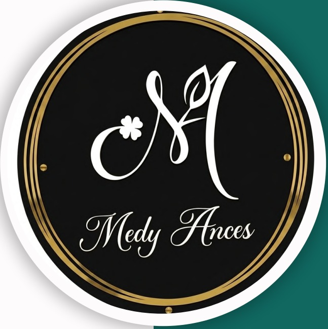
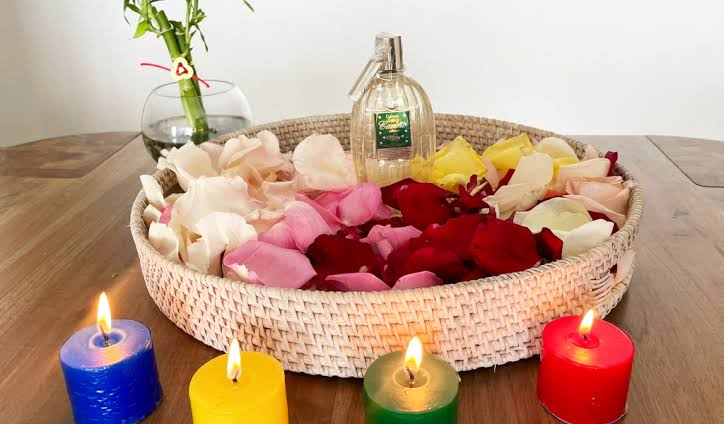
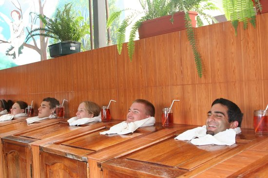

Misión
Brindar una atención respetuosa y personalizada, conservando las tradiciones ancestrales.

Medicina ancestral, tradición y bienestar
Tradición, respeto y atención personalizada.
MEDY ANCES es una microempresa dedicada a ofrecer servicios de atención espiritual, prácticas ancestrales y terapias alternativas.
Nuestro objetivo es brindar una atención cercana y personalizada, respetando las creencias, preferencias y necesidades de cada cliente.

Brindar una atención respetuosa y personalizada, conservando las tradiciones ancestrales.
Ser una microempresa reconocida por su responsabilidad, calidad de atención y respeto hacia sus clientes.
Los principios que orientan nuestra atención son:
Medicina ancestral, tradición y atención personalizada.
En MEDY ANCES ofrecemos diferentes servicios relacionados con las prácticas tradicionales, la atención espiritual y las terapias alternativas.

Prácticas tradicionales relacionadas con las costumbres ancestrales y las creencias de renovación espiritual.
Solicitar información
Actividades vinculadas con las costumbres y creencias espirituales que caracterizan a nuestro establecimiento.
Solicitar informaciónActividades tradicionales realizadas en espacios naturales, relacionadas con las creencias y experiencias espirituales.
Solicitar informaciónNuestros servicios corresponden a prácticas tradicionales y creencias espirituales. No sustituyen la atención médica profesional.
Conoce nuestras tradiciones, servicios y productos mediante esta galería de imágenes.
Consulta las características de los servicios disponibles en MEDY ANCES.
| N.º | Servicio | Descripción | Disponibilidad |
|---|---|---|---|
| 1 | Baños de florecimiento | Práctica tradicional espiritual. | Consultar |
| 2 | Baños de Santo Reyes | Actividad vinculada con creencias tradicionales. | Consultar |
| 3 | Visitas a lagunas | Actividades en espacios naturales. | Previa coordinación |
| 4 | Consultas personalizadas | Atención individual y orientación. | Previa cita |
| 5 | Lecturas espirituales | Orientación basada en creencias tradicionales. | Consultar |
| 6 | Trabajos especializados | Servicios según consulta individual. | Consultar |
Pequeños hábitos para una vida equilibrada.
En MEDY ANCES valoramos la importancia del bienestar personal, el descanso y los espacios de tranquilidad como parte de las actividades cotidianas.
Mantener hábitos saludables, dedicar tiempo al descanso y realizar actividades de autocuidado son acciones que contribuyen a una mejor calidad de vida.
Dedica momentos del día al descanso, la respiración tranquila y las actividades que disfrutas en ambientes agradables.
Mantén hábitos de higiene, alimentación equilibrada, actividad física y descanso para favorecer tu bienestar cotidiano.
Consulta información adicional sobre salud y bienestar en fuentes oficiales.
Conocer más sobre salud y bienestarCompleta el siguiente formulario para solicitar información sobre nuestros servicios.
Conoce más sobre la cultura, las tradiciones y el patrimonio de nuestro país.